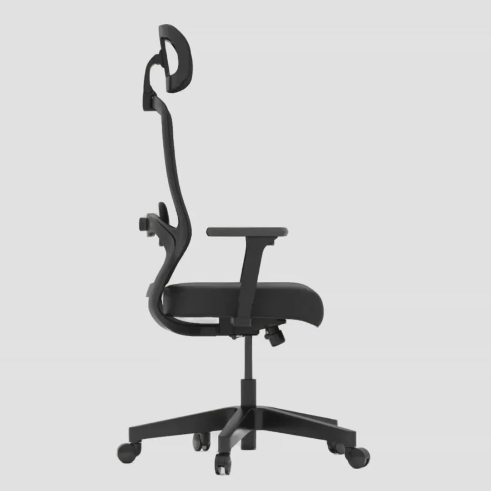
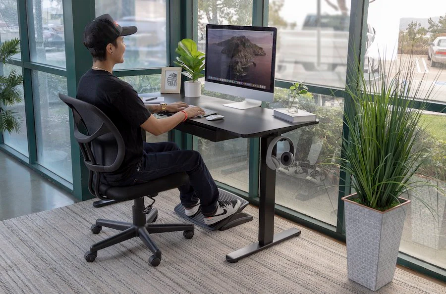
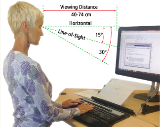
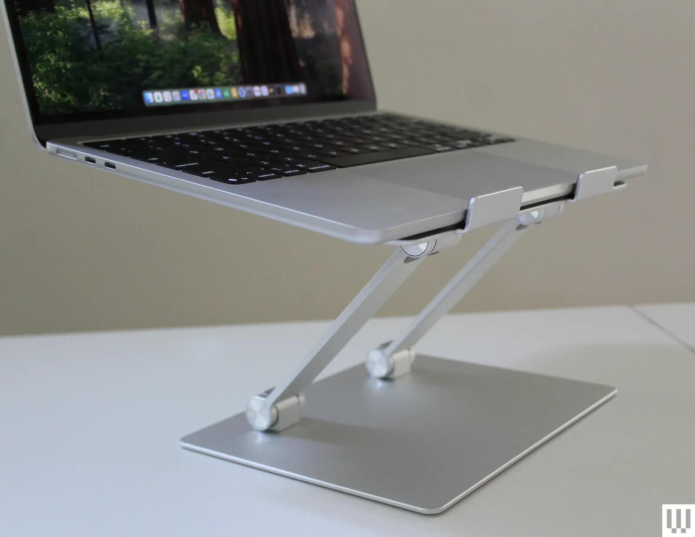
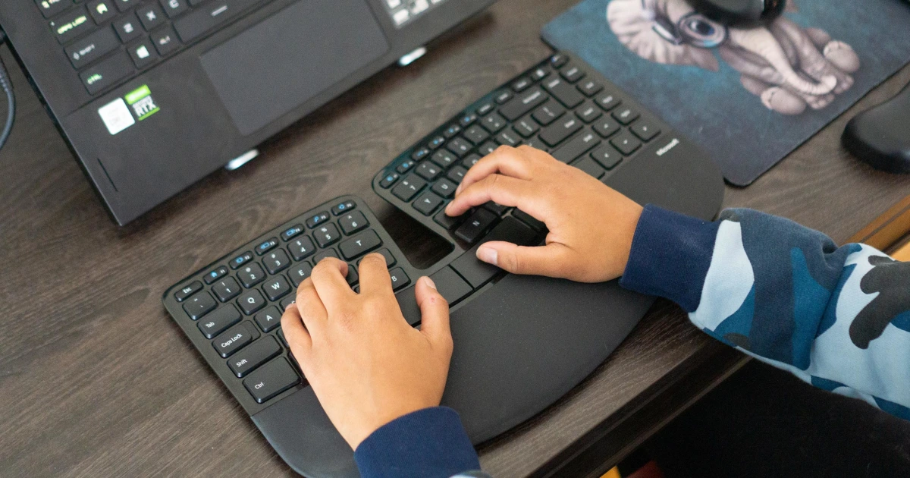

Ergonomic Standards for Human Health
Ergonomic Setups that Prevents Injuries
Chair
Desk
Monitor



Choose a chair that supports your spine. Adjust the height of the chair so that your feet rest flat on the floor. Or use a footrest so your thighs are parallel to the floor. If the chair has armrests, position them so your arms sit gently on the armrests with your elbows close to your body and your shoulders relaxed.
Under the desk, make sure there's enough room for your legs and feet. If your desk has a hard edge that's not rounded, pad the edge or use a wrist rest. This protects your wrists from a problem called contact stress that can happen as a result of extended contact with a hard edge.
Place the computer monitor straight in front of you, directly behind your keyboard, about an arm's length away from your face. The monitor should be no closer to you than 40 cm and no further away than 74 cm. The top of the screen should be at or slightly below eye level.
More Tips:
Using a laptop computer may lead to discomfort because of the low screen height and cramped keyboard and touchpad. If you use a laptop at your desk, consider getting an external keyboard and mouse, along with a laptop stand, to more closely mimic a desktop computer setup.


Put your computer keyboard in front of you so your wrists and forearms are in line and your shoulders are relaxed. If you use a mouse or another type of pointer connected to a computer, place it within easy reach, on the same surface as your keyboard. While you are typing, keep your wrists straight, your upper arms close to your body, and your hands at or slightly below the level of your elbows.